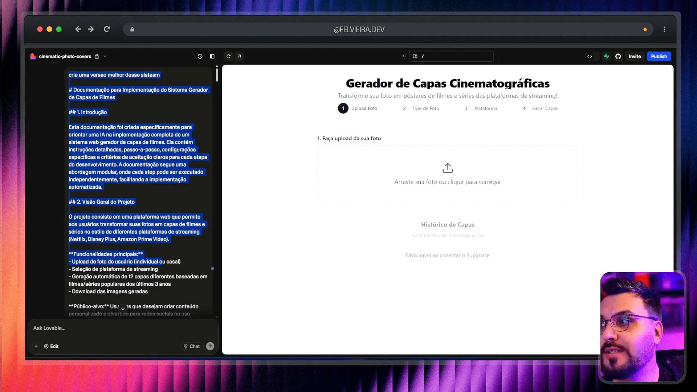
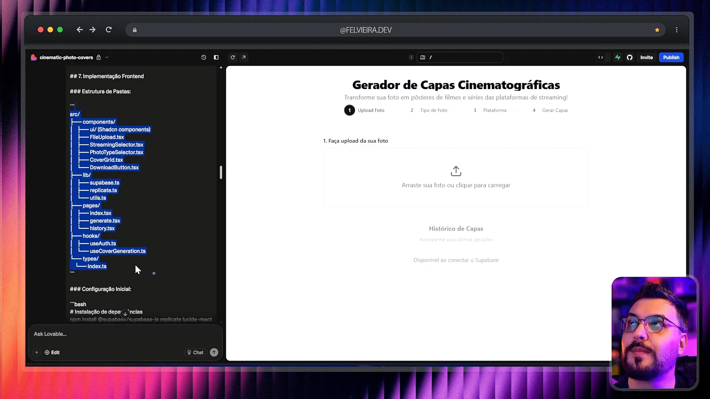
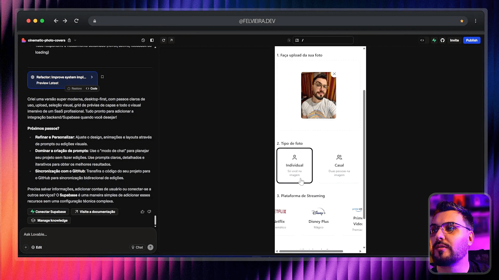
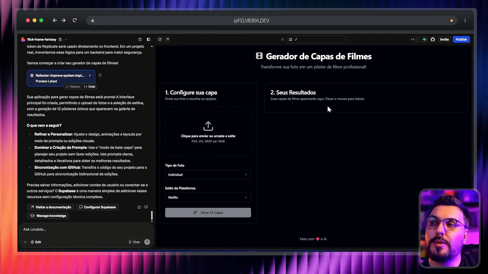
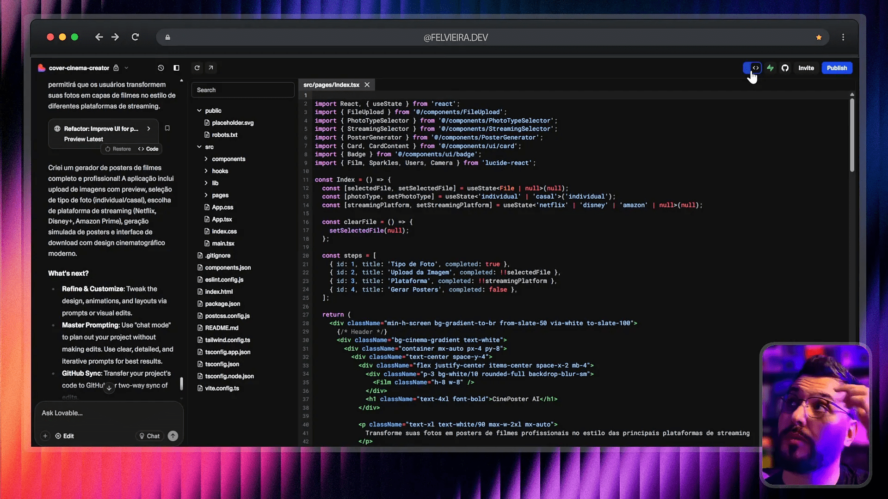
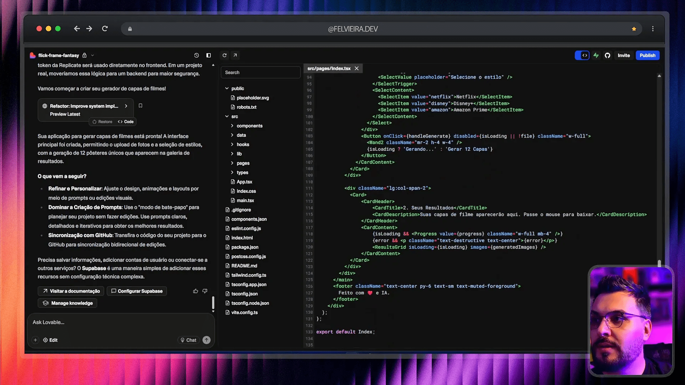
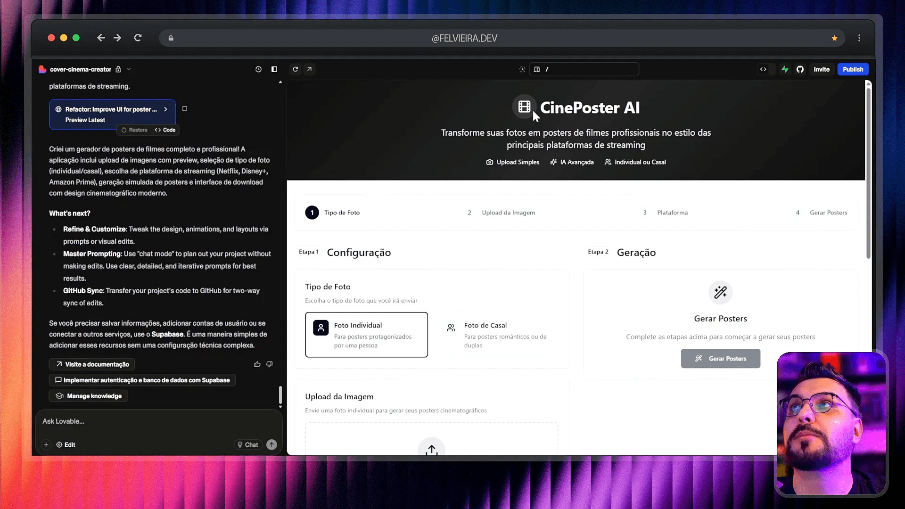

Olá, pessoal! Aqui é o Felipe Vieira, designer e desenvolvedor senior com mais de 16 anos de experiência, e hoje vamos mergulhar fundo em uma análise comparativa que muitos me pediram: qual das maiores inteligências artificiais — OpenAI, Google Gemini ou Anthropic Claude — é a melhor para criar um MVP (Produto Mínimo Viável) para SaaS? Tudo isso usando ferramentas incríveis como vibecoding cursor bolt lovable replit ai, que estão revolucionando o jeito que construímos software hoje.
Se você quer entender como essas LLMs (Modelos de Linguagem de Grande Escala) se comportam na prática, desde a concepção até a geração de código e interface, este artigo é para você. Além disso, vou mostrar um exemplo real de um MVP que estou desenvolvendo, que será a base do meu curso, onde ensino como usar o Cursor para desenvolver produtos digitais do zero, com deploy integrado e gateway de pagamento.
Prepare-se para uma imersão detalhada, com exemplos práticos, código, análise de interface e dicas valiosas para você acelerar seus projetos com IA e vibecoding cursor bolt lovable replit ai. Vamos nessa!
Índice
- 🚀 Introdução: Por que a escolha da LLM importa para seu MVP SaaS?
- 🖼️ O MVP em foco: Gerador automático de posters estilo Netflix, Amazon e Disney
- 🤖 Teste 1: OpenAI — o clássico robusto com foco em texto e código
- 🤖 Teste 2: Google Gemini — visual mais polido e foco em UI/UX
- 🤖 Teste 3: Anthropic Claude — balanceando simplicidade e funcionalidade
- 🧩 Análise Comparativa: Qual LLM entrega o melhor MVP para SaaS?
- 📈 Como usar o vibecoding cursor bolt lovable replit ai para potencializar seu desenvolvimento SaaS
- 💡 Dicas práticas para escolher e usar LLMs no seu projeto SaaS
- 📚 Recursos extras para você dominar vibecoding cursor bolt lovable replit ai
- ❓ FAQ: Perguntas frequentes sobre LLMs e desenvolvimento SaaS com IA
- 🔚 Conclusão: A revolução do desenvolvimento SaaS com IA está aqui
🚀 Introdução: Por que a escolha da LLM importa para seu MVP SaaS?
Quando falamos em desenvolver um MVP para SaaS, o que determina muito a qualidade e o sucesso do produto é a inteligência artificial que você escolhe para construir sua aplicação. Não é só sobre o que a IA pode fazer, mas como ela faz, qual é a janela de contexto, a especialização do modelo, e como ele entende e gera código e interface para seu produto.
Já vi muitos posts criticando IA porque “ela erra”, mas a verdade é que o problema muitas vezes está em não saber escolher a LLM correta para a tarefa, ou em não usar as melhores práticas de prompt engineering para extrair o máximo da IA. Cada LLM tem seu foco, suas limitações e pontos fortes.
No meu canal e na minha área de membros, eu falo muito sobre isso, inclusive compartilho materiais detalhados sobre como escolher e usar LLMs, explicando no “tintim por tintim” como fazer a ponte entre sua ideia e o código gerado, tudo isso com calma e método.
Por isso, hoje vamos ver uma análise comparativa entre três grandes players do mercado: OpenAI, Google Gemini e Anthropic Claude, usando um mesmo prompt para gerar um MVP real, focado em um gerador de posters cinematográficos com inteligência artificial. Vamos ver o que cada um entrega, como eles geram código, interface e funcionalidades.
🖼️ O MVP em foco: Gerador automático de posters estilo Netflix, Amazon e Disney
A ideia central do MVP que estou desenvolvendo é simples, mas poderosa: criar um sistema que gera posters automaticamente usando IA, no estilo dos serviços de streaming como Netflix, Amazon Prime Video e Disney+. Já existem muitas soluções que fazem isso, mas a maioria exige que o usuário faça upload manual da imagem, peça manualmente para a IA processar e edite tudo manualmente.
O diferencial aqui é que o sistema faz tudo automaticamente. Você só escolhe o estilo, envia a foto e ele gera vários posters prontos para download, com um visual profissional, organizado, e adequado para SaaS. Esse MVP será a base do meu curso sobre Cursor, onde ensino como construir do zero até o deploy integrado com gateway de pagamentos.
Para essa comparação, usei um prompt padrão para os três LLMs, pedindo para gerar a arquitetura, os requisitos, o front-end, back-end e até mesmo a estrutura de pastas e variáveis de ambiente, tudo pensado para ser integrado com Supabase para banco de dados e outras ferramentas no ecossistema vibecoding cursor bolt lovable replit ai.

🤖 Teste 1: OpenAI — o clássico robusto com foco em texto e código
Comecei testando o prompt na OpenAI, que é a mais conhecida e utilizada. O resultado foi um código funcional, com a estrutura completa do MVP, incluindo o wizard de seleção, upload de imagens, escolha do estilo de poster (Netflix, Disney, Prime), e geração dos posters.
Apesar de o código estar funcional, a interface ficou bastante simples e básica, sem integração real para gerar imagens na nuvem — tudo ainda estava mockado. O front-end parecia uma aplicação feita com React simples, mas sem muitos detalhes visuais. O upload funcionava, mas as capas geradas eram estáticas e não interativas.
O que gostei foi a qualidade do código, que estava organizado e com comentários claros. A arquitetura sugerida incluía banco de dados no Supabase e variáveis de ambiente para a API, o que facilita a escalabilidade depois. Porém, a interface visual ficou devendo um pouco e a responsividade da UI teve problemas, quebrando o layout em telas menores.

Vale destacar que a OpenAI gerou mais componentes específicos, como o botão de download, mas algumas funcionalidades, como baixar todos os posters, não funcionavam de fato — só notificavam que a ação foi iniciada.

🤖 Teste 2: Google Gemini — visual mais polido e foco em UI/UX
Em seguida, testei o mesmo prompt no Google Gemini, a LLM da Google, que está ganhando espaço no mercado, principalmente por sua integração com o ecossistema Google Cloud e ferramentas modernas.
O Gemini gerou uma interface mais visual e organizada. A disposição dos elementos ficou mais compacta e agradável, com uma melhor experiência para o usuário. Ele já trouxe exemplos reais de séries e filmes de cada streaming, adaptando o conteúdo para o estilo selecionado, o que demonstra uma inteligência contextual melhor para o uso prático.
Apesar disso, a integração real para geração das imagens também não estava funcionando — provavelmente um problema de API ou limitação do ambiente de teste. Algumas funções, como o download, não completavam a ação, mas visualmente o sistema parecia mais completo e profissional.

O código gerado pelo Gemini ficou com cerca de 200 linhas, organizado em componentes reutilizáveis, incluindo um array para os passos do wizard, o que facilita manutenção e escalabilidade do código.

Na questão da responsividade, o Gemini apresentou um layout mais consistente, sem quebras estranhas, garantindo uma boa experiência em diferentes dispositivos.

🤖 Teste 3: Anthropic Claude — balanceando simplicidade e funcionalidade
Por fim, testei o Anthropic Claude, que tem ganhado atenção por seu foco em segurança e ética, além de oferecer uma abordagem equilibrada entre geração de texto e código.
O Claude gerou um MVP que parecia uma mistura do que o OpenAI e o Gemini entregaram. A interface tinha um wizard com visual dividido lado a lado, o que facilita a visualização dos dados e ações em uma única tela. O layout ficou um pouco mais “espremido” e o código um pouco mais simples, mas funcional.
O MVP criado pelo Claude foi o que mais se aproximou de uma aplicação funcional, apesar de ainda faltar algumas integrações reais para geração de imagens e downloads automáticos. A experiência do usuário estava mais fluida, e o código gerado foi mais enxuto, o que pode ser uma vantagem para projetos que busquem rapidez e simplicidade.

🧩 Análise Comparativa: Qual LLM entrega o melhor MVP para SaaS?
Agora que vimos o que cada LLM entregou, vamos comparar ponto a ponto, para você entender qual é a melhor escolha para seu projeto com vibecoding cursor bolt lovable replit ai.
Turbine seu Desenvolvimento com Prompts!
Você já sonhou em criar seu próprio aplicativo mas pensou que precisaria ser um gênio da programação? Chegou a hora de transformar esse sonho em realidade! Com as ferramentas no-code de hoje, você pode criar aplicativos profissionais sem escrever uma única linha de código.
- Qualidade do código: OpenAI gerou um código mais detalhado e com mais componentes, Gemini trouxe código organizado e reutilizável, e Claude entregou código mais simples e enxuto.
- Interface visual: Gemini foi o mais polido e visualmente agradável, Claude ficou no meio termo e OpenAI ficou mais básico e funcional.
- Funcionalidades: Nenhum dos três entregou integrações completas para geração e download automáticos, mas todos criaram uma estrutura que pode ser facilmente expandida.
- Responsividade: Gemini e Claude tiveram layouts mais responsivos que o OpenAI, que apresentou quebras na interface.
- Contextualização: Gemini mostrou maior inteligência contextual ao adaptar títulos e estilos de séries para o streaming selecionado.
Em resumo, o Google Gemini parece ser o mais equilibrado para projetos que exigem um MVP com boa interface e experiência, enquanto o OpenAI é mais indicado para quem precisa de código detalhado e componentes específicos. O Claude é uma boa opção para quem busca simplicidade e rapidez.
📈 Como usar o vibecoding cursor bolt lovable replit ai para potencializar seu desenvolvimento SaaS
Além da escolha da LLM, o sucesso do seu MVP depende muito das ferramentas que você usa para acelerar o desenvolvimento. Aqui entram ferramentas como o vibecoding cursor bolt lovable replit ai, que criei e uso diariamente para construir produtos digitais do zero.
- Cursor: Uma IDE avançada com AI integrada que ajuda a escrever código profissional, desde a arquitetura até a entrega em produção.
- Bolt: Plataforma que permite deploy automático de aplicações com integração a gateways de pagamento, além de oferecer um modelo de cobrança por uso, ideal para SaaS.
- Lovable: Ferramenta que gera interfaces prontas com IA, acelerando a entrega do front-end e agilizando a prototipagem.
- Replit AI: IDE online com suporte AI que facilita o desenvolvimento colaborativo e rápido, ideal para protótipos e MVPs.
- Vibecoding: Metodologia e conjunto de práticas para otimizar a criação de software usando IA, que ensino em meus cursos.
O segredo é usar essas ferramentas em conjunto para que o processo de desenvolvimento seja fluido, desde a concepção do MVP, criação do código, geração da interface, até o deploy e monetização do produto.
Além disso, plataformas como o BoltD oferecem a possibilidade de usar LLMs locais, como o Holama, que pode rodar na sua VPS sem custo de mensalidade, apenas pagando pelo uso. Isso é ideal para quem quer reduzir custos e ter mais controle sobre a infraestrutura.
Eu já tenho essa configuração rodando na minha VPS e posso ajudar você a configurar a sua também — basta pedir nos comentários!
💡 Dicas práticas para escolher e usar LLMs no seu projeto SaaS
Com base na minha experiência e nos testes que fiz, aqui vão algumas dicas importantes para você usar LLMs com sucesso no desenvolvimento do seu MVP SaaS:
- Defina claramente o escopo do seu MVP: Foque no que é essencial para entregar valor inicial e ganhar dinheiro. Separe requisitos importantes dos desejáveis para não perder foco.
- Escolha a LLM adequada ao seu tipo de projeto: Se quer código detalhado e componentes, OpenAI é ótimo. Para UI mais polida e contextual, Google Gemini. Para simplicidade e rapidez, Claude.
- Use prompts estruturados e completos: Crie prompts que gerem não só código, mas arquitetura, banco de dados, variáveis de ambiente e estrutura de pastas.
- Combine ferramentas para acelerar o desenvolvimento: Use Cursor para codificação, Bolt para deploy, Lovable para UI, e Replit AI para protótipos rápidos.
- Teste a responsividade e usabilidade: Mesmo que o código esteja funcionando, verifique como a interface se comporta em diferentes dispositivos e resoluções.
- Acompanhe atualizações das plataformas e LLMs: Elas evoluem rápido e podem melhorar muito o desempenho e custo do seu projeto.
- Considere usar LLMs locais para reduzir custos: Se você tem VPS, pode rodar modelos como Holama e economizar com mensalidades.
📚 Recursos extras para você dominar vibecoding cursor bolt lovable replit ai
Quer se aprofundar e aprender a usar essas ferramentas de forma profissional? Eu preparei um curso completo que vai do zero até o deploy, integrando gateway de pagamento, com exemplos práticos e passo a passo.
Além do curso, você pode acessar materiais gratuitos, e-books, e meus vídeos no YouTube que detalham desde como conseguir descontos em ferramentas como Lovable e Bolt, até como configurar LLMs locais na sua VPS.
Confira alguns links importantes para começar:
- Curso completo de desenvolvimento com IA
- Regras e prompts para IA
- Lovable e Bolt grátis — tutorial
- Google Gemini grátis — tutorial
- Como criar app completo com Cursor
- Agende mentoria comigo
Se quiser, inscreva-se na lista de espera para receber descontos especiais e ser avisado assim que o curso for lançado.
❓ FAQ: Perguntas frequentes sobre LLMs e desenvolvimento SaaS com IA
1. Qual a diferença principal entre OpenAI, Google Gemini e Anthropic Claude?
OpenAI é referência em geração de texto e código detalhado, Google Gemini foca em experiência visual e contextualização, e Anthropic Claude oferece simplicidade e segurança com código mais enxuto.
2. É possível usar essas LLMs gratuitamente?
Algumas plataformas oferecem períodos grátis ou planos com créditos gratuitos. Além disso, ferramentas como Lovable e Bolt podem ser usadas gratuitamente por um tempo, e há modelos locais como Holama para uso sem custo mensal.
3. O que é vibecoding cursor bolt lovable replit ai?
É um conjunto de metodologias e ferramentas que combinam IA para acelerar o desenvolvimento de software, desde a codificação (Cursor), interface (Lovable), deploy (Bolt), até prototipagem rápida (Replit AI).
4. Como posso aprender a usar essas ferramentas de forma profissional?
Eu ensino isso no meu curso completo, que vai do zero ao deploy, com exemplos reais, integrações e práticas recomendadas. Além disso, disponibilizo vídeos e materiais gratuitos no meu canal e site.
5. É difícil configurar LLMs locais na minha VPS?
Não é difícil, mas requer alguns conhecimentos básicos de servidor. Eu já tenho tutoriais e vídeos explicando passo a passo, e ofereço suporte para ajudar você a configurar de forma atualizada e estável.
🔚 Conclusão: A revolução do desenvolvimento SaaS com IA está aqui
O futuro do desenvolvimento de software está sendo moldado pelas LLMs e pelas ferramentas que as potencializam, como vibecoding cursor bolt lovable replit ai. Saber escolher a IA correta para seu projeto e combinar as ferramentas certas pode transformar uma simples ideia em um produto digital rentável, rápido e profissional.
Nos testes que fiz, vimos que cada LLM tem seu ponto forte e que, mesmo com algumas limitações atuais, o potencial para acelerar o desenvolvimento é enorme. Além disso, o uso de plataformas como Bolt para deploy e Lovable para UI reduzem o tempo e custo do projeto de forma significativa.
Se você quer entrar nesse mercado e estar à frente, minha recomendação é começar a se familiarizar com essas tecnologias agora mesmo, aproveitar os recursos gratuitos e, se possível, investir em um curso estruturado para não perder tempo e evitar erros comuns.
Espero que este artigo tenha ajudado você a entender melhor o cenário e a tomar decisões mais informadas para seus projetos. Se quiser trocar uma ideia, tirar dúvidas ou saber mais, fique à vontade para me contatar!
Valeu e até a próxima!
Este artigo é baseado no meu video OpenAI vs Gemini vs Claude: Qual IA cria o MELHOR MVP para SaaS? Teste REAL no LOVABLE! pra mais detalhes vejam direto no youtube.